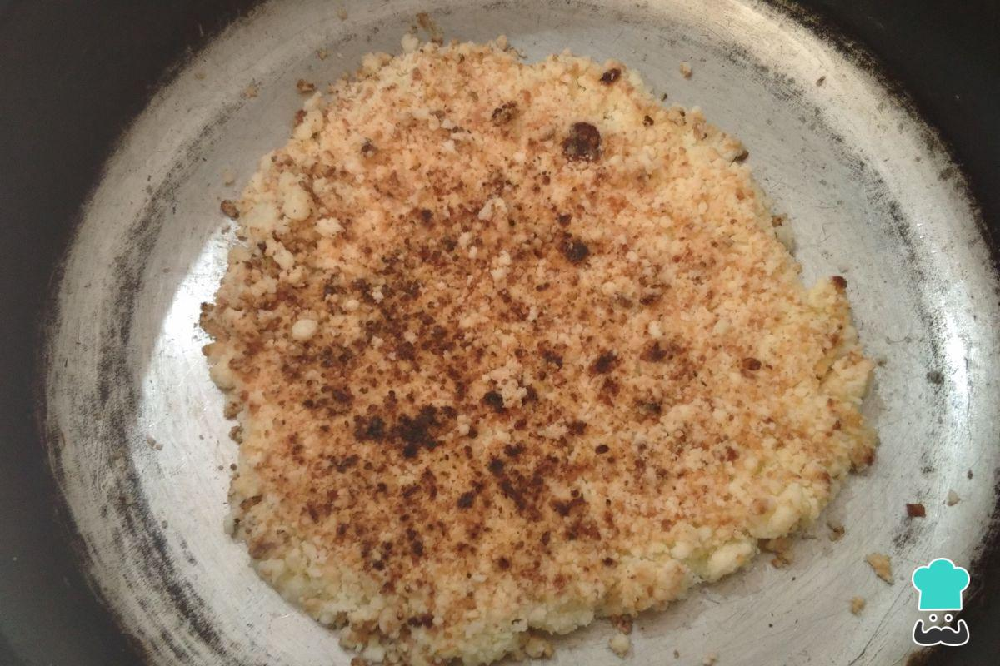

Mbeju

El mbejú o mbeyú es un plato sincrético que proviene de Paraguay, al sur de América. De clara influencia indígena guaraní por el uso del almidón de mandioca o yuca, también se le agrega queso y mantequilla, productos añadidos por los jesuitas españoles. De hecho, la misma palabra 'mbejú' -o 'mbeyú'- es un vocablo guaraní que significa “torta aplastada”, y en esto consiste esta preparación: es una especie de tortilla que reúne los ingredientes anteriores y que se cocinan asados en una sartén. El mbejú suele disfrutarse como desayuno, acompañado de mate, café, té o leche, y también se acostumbra a servirse con motivo de la festividad de San Juan. Aunque hay varios tipos de mbejú, el que te compartimos en RecetasGratis es el más sencillo y que podrás preparar en tu casa sin dificultades.
Ingredients
- 500 gramos de almidón de mandioca o yuca amargo
- 250 gramos de queso medio curado cremoso
- 200 gramos de mantequilla o margarina
- 1 cucharada sopera de sal
Steps
- Para preparar esta receta de mbejú paraguayo, empieza por la base: el almidón de yuca. Añade en una fuente junto con la sal y mézclalo bien.
- Ahora, añade el queso. Lo ideal es que sea un queso cremoso no muy fresco, pero tampoco muy maduro
- Por último, agrega la grasa. Generalmente, se usa mantequilla, pero puedes usar margarina
- Mezcla bien entre las manos para lograr una textura de arena no muy fina. De hecho, deben formarse bolitas más o menos grandes. Recuerda, no debe tener aspecto de masa, la mezcla está lista cuando tiene la textura que observamos en la foto.
- Engrasa un poquito una sartén, apenas para evitar que se peguen, y extiende una porción de la mezcla cuando esté bien caliente.
- Procura no aplastar la mezcla contra el sartén. Lo único que debes hacer es sellar los bordes del mbejú con una cuchara o cuchillo plano.
- Para voltearlo, coloca un plato grande en la sartén para traspasar la tortilla y que quede la parte cocida hacia arriba.
- Ahora déjalo caer con cuidado en la sartén para cocerlo por el otro lado. Cuando esté listo, manténlos calientes y sirve acompañado de mate, café, té o leche caliente. También puedes servirlo con salchichas o panchos para acompañar una buena sopa de verduras o carne. ¡Ya sabes cómo preparar mbejú en casa!
Homepage